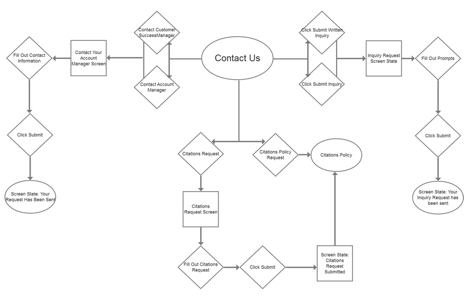

Kayla Drew
Kayla Drew
An easier way to access Forrester services
An internship project for simplifying Forrester’s Contact Us Page
The Problem:
When clients come to Forrester’s contact us page they are overwhelmed. Information is disorganized and categorized in ways that aren’t intuitive to the average user.
The Solution:
Design a solution that organizes Forrester’s services in a way that reflects the user’s mental model -- organized information that’s easy to locate and understand.
The Process:
I interviewed 6 Forrester’s clients to understand their present experience with the Forrester Contact Us Page, and discovered that they were having difficulty contacting the correct areas within Forrester to access the right product. Most requests were being routed to the incorrect path, resulting in a confusing journey for the user.
Deliverables:
- Card Sorting - Open and Closed
- User flows
- Low-Fi Wireframes
- Hi-Fi Wireframes
Identifying Pain Points in competitor processes:
I began with user interviews of the target Forrester personas (a mix of user and vendor clients) to determine what the pain points were for my user in their present journey with the Forrester contact us page.
Mapping out the user experience:
Open and closed card sorting allowed me to better understand the mental model of my users. Before I could map out their ideal user flow, I needed to understand how our users expected their information to be organized - their ideal information architecture.

I utilized my insights from card sorting to design a flow of the solution - a user flow that would resolve the frustrations of our personas. User flows helped me to simplify the user’s journey and ensure that the information they needed to access was where they expected it to be.
Forrester Contact Page User Flow

Prototyping, usability testing and iteration:
With my user flows in mind, I designed low-fi prototypes using Axure RP for my initial design to quickly test out my design solutions with Forrester’s clients. This helped to ensure that my designs were solving the user’s frustrations and helping them to easily achieve their needs and goals before we invested time into higher fidelity prototypes.
After usability testing of the low-fi mockup, I was able to use my research insights to inform a high fidelity interactive prototype with Axure RP, which went through one final round of usability testing and iterative designing.